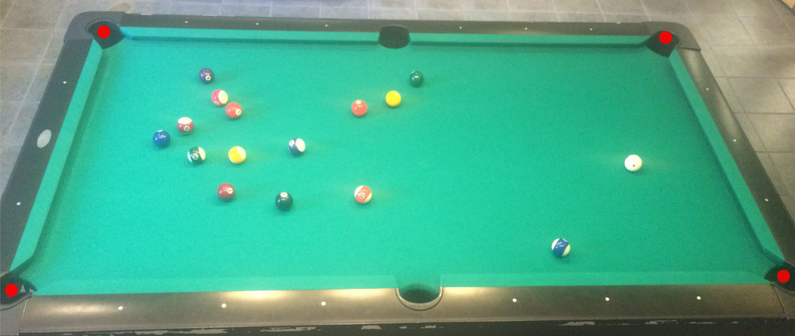
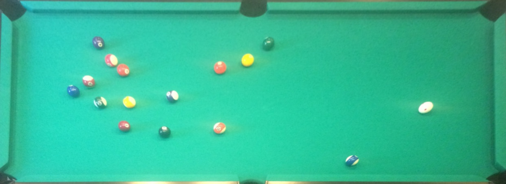
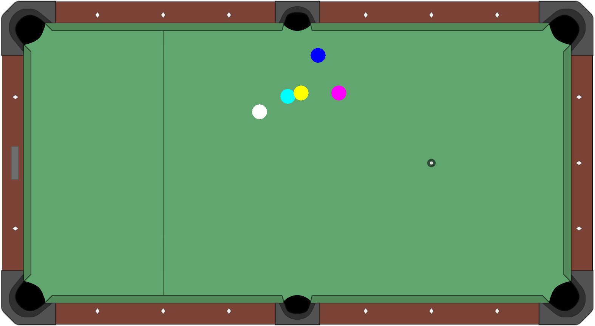

how it works

Calibration
The user selects the four corner pockets
so that the assistant knows where to look.
This also helps when the camera isn't
perfectly vertical.

Detection
The assistant shears the video input uses object
detection to find where the balls are.

Simulation
The program runs a simulation and calculates where
the balls will come to rest. This end state is displayed
to the user.